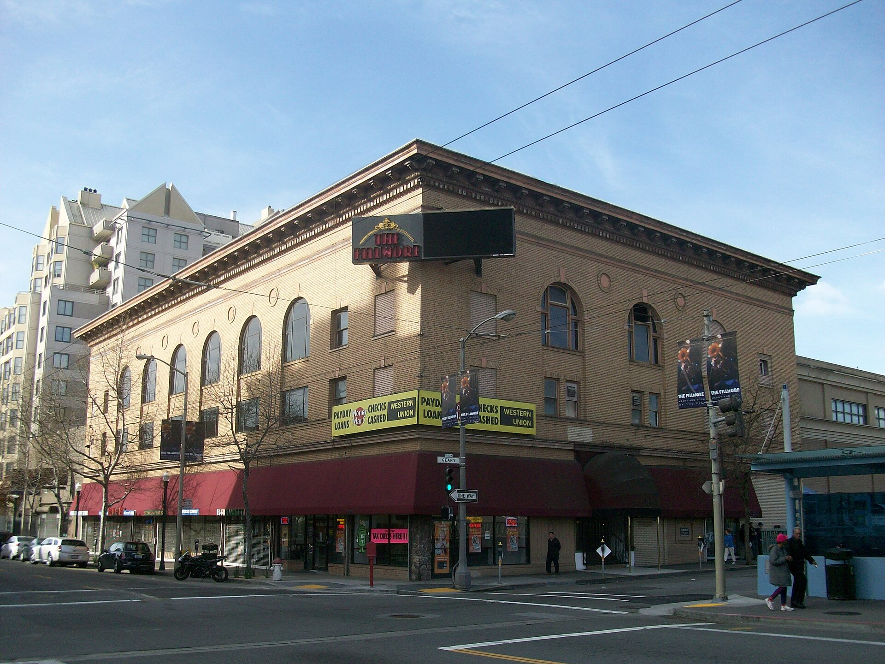

Huey Lewis and the News
1986
1986 lief es für uns zum ersten Mal auch finanziell richtig gut. Nachdem mein Stipendium der Max-Kade-Foundation ausgelaufen war, bewilligte mir die Deutsche Krebshilfe ein Anschlussstipendium. Denis legte noch etwas drauf. Wir konnten uns etwas leisten. Und weil Ulli und Derek uns in den vergangenen Jahren so oft geholfen hatten, wollten wir ihnen etwas zurückgeben.
Silvester 1986 auf 1987 stand vor der Tür. Wir luden die beiden nach San Francisco ein. Für den Abend hatten wir Karten für eine Silvesterparty im Fillmore West besorgt. Das Fillmore hatte Legendenstatus. In den Hippie-Jahren traten hier Grateful Dead, Jefferson Airplane, Janis Joplin und viele andere Größen der Westküsten-Szene auf. Bill Graham machte das Fillmore zu einer der bekanntesten Konzertadressen Amerikas. An diesem Abend spielten Huey Lewis and the News.
Wir wollten unseren Gästen aber nicht nur Musik bieten. Derek liebte deutsche Küche. Deshalb hatte Hilde einen Sauerbraten eingelegt. Mit Rotkohl und Kartoffeln. Alles war vorbereitet.

Dann begann der Abend im Fillmore. Die Veranstalter hatten eine wunderbare Idee: Eine Stunde lang gab es kostenlosen Sekt. Derek und ich entwickelten sofort eine ebenso großartige Strategie. Wir positionierten uns direkt an der Theke in der ersten Reihe. Was wir nicht selbst trinken konnten, reichten wir nach hinten weiter. Ulli hielt sich wegen einer kurz zuvor erfolgten Zahnoperation zurück. Und so landeten die meisten Gläser bei Hilde. Und Huey Lewis spielte - im Fillmore West. Wir mittendrin. Wir tanzten und feierten, als gäbe es kein Morgen. Unser Plan war total aufgegangen. Dachten wir. Kurz nach Mitternacht stellte sich heraus, dass der Plan einen kleinen Fehler hatte. Wir waren sternhagelvoll.
Als die Veranstaltung endete, mussten wir zunächst die Treppe vom ersten Stock ins Erdgeschoss bewältigen. Das erwies sich als schwieriger als erwartet. Draußen herrschte völliges Chaos. Niemand wusste mehr so recht, wo er war. Einschließlich uns. Schließlich organisierte irgendein Portier ein Taxi für uns. Wir waren begeistert. Die Warteschlange war endlos.
Wir fanden, dieser Mann habe ein großzügiges Trinkgeld verdient. Also hielt Ulli einen Zehn-Dollar-Schein aus dem Fenster und drückte ihn dem vermeintlichen Wohltäter in die Hand. Der Mann schaute völlig verblüfft. Es war gar nicht der Portier. Es war irgendein zufälliger Partygast. Der unbekannte Glückspilz freute sich sichtbar über den unverhofften Geldsegen. Uns war das egal. Wir hatten andere Probleme.
Vor allem Hilde. Auf der Rückfahrt wurde ihr zunehmend schlechter. Am nächsten Morgen ging es ihr noch schlechter. Der kostenlose Sekt war offenbar nicht ganz so hochwertig gewesen wie erhofft. Hilde blieb im Bett liegen und war nicht in der Lage, sich um den Sauerbraten zu kümmern. Also versuchten Ulli und ich, das Werk zu vollenden. Ob der Sauerbraten wirklich gelungen war, kann ich bis heute nicht mit Sicherheit sagen.
Denn unsere Geschmacksnerven waren nach dieser Silvesternacht noch ziemlich angeschlagen.